Nothing here has been ingested or published. Each plate is shown whole, then as the four crops the pipeline would actually cut from it, at the focal point it would actually detect.
Two approved documents specify this cover and they do not agree, so both are rendered below.
kad-tajuk, data-free. Graphic kit spec §7 plus the
Editorial Review Board of 24 Ogos 2026. Skop lines, title lines and alt text are rendered
exactly as approved. The board's words: "No cover in this batch carries a ringgit figure.
That is a board ruling on accuracy, not a design preference, and it is not the engineer's to
reopen." Its reasoning is that on these eight articles the qualification IS the fact —
the true answer is usually belum disahkan or tiada ketetapan, and a cover is
the one surface that strips qualification on its way into WhatsApp.| crop | window taken | output | target | |
|---|---|---|---|---|
crop-4x5-mobile-cover | 560×700 at 952,0 | 560×700 | 1920×2400 | undersized |
crop-4.3x1-desktop-hero | 2464×700 at 0,0 | 2464×700 | 2464×700 | ok |
crop-4x3-article-card | 933×700 at 766,0 | 933×700 | 1600×1200 | undersized |
crop-16x9-og | 1333×700 at 566,0 | 1200×630 | 1200×630 | ok |
ingest-article.mts passes no
focalPointOverride — so a flat graphic falls through to sharp's saliency, which
lands where it likes. The crops shown are the real ones.
processSmartCrops already accepts the override and spec §7.2 asks for
{x: 0.5, y: 0.5}; wiring the article file to it is a separate, one-file change,
and it is what makes either set frame predictably.page.tsx drops the 3.52:1 strip
into an aspect-[2.4/1] box with object-cover, showing only the
centre 68% of its width — x 392…2072.
The mobile cover, article card and OG image all show the full width.crop-4.3x1-desktop-hero is 3.52:1 and crop-16x9-og is 1.905:1. Both
are load-bearing R2 object keys, so neither was touched.coverImageSmartCrops. There is no minimum-dimension check anywhere in the
pipeline. The exact minimum that fills all four targets is 2464×2400.credit: HelloKahwin; board ruling 4 and style guide §13.1 fix
credit: "Grafik: HelloKahwin". Each set below carries its own document's value.globals.css itself declares. Embedding would mean adding
satori + resvg-js.--primary #22122d--brand-secondary #cbb588--brass-deep #836f44--background #fcfaf7--surface-subtle #f7f5f1--foreground #13110f--muted-foreground #585550--hairline #e4e1dc--plum-deep-foreground #e8e2ec--plum-deep-muted #d1cbd5Skop line, title line and alt text rendered exactly as approved at the board of 24 Ogos 2026.
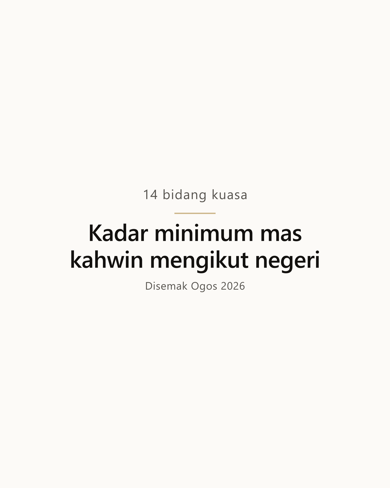
Kad tajuk bertulis kadar minimum mas kahwin mengikut negeri, bagi 14 bidang kuasa, disemak Ogos 2026.
cover: file: ./mas-kahwin-ikut-negeri-kad-tajuk.png alt: Kad tajuk bertulis kadar minimum mas kahwin mengikut negeri, bagi 14 bidang kuasa, disemak Ogos 2026. credit: Grafik: HelloKahwin licenseClass: G licensorName: HelloKahwin
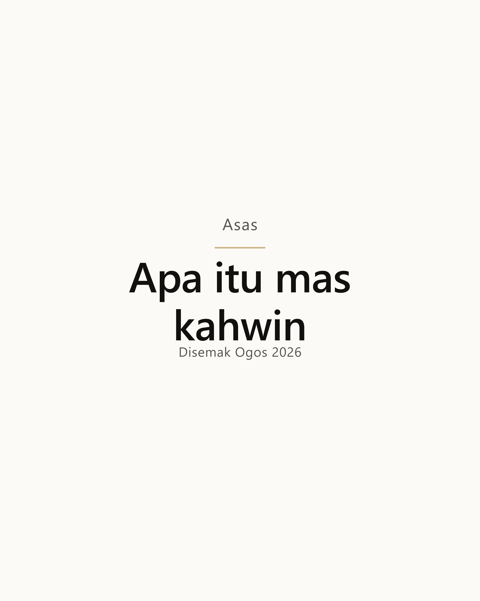
Kad tajuk artikel asas, bertulis apa itu mas kahwin, disemak Ogos 2026.
cover: file: ./apa-itu-mas-kahwin-kad-tajuk.png alt: Kad tajuk artikel asas, bertulis apa itu mas kahwin, disemak Ogos 2026. credit: Grafik: HelloKahwin licenseClass: G licensorName: HelloKahwin
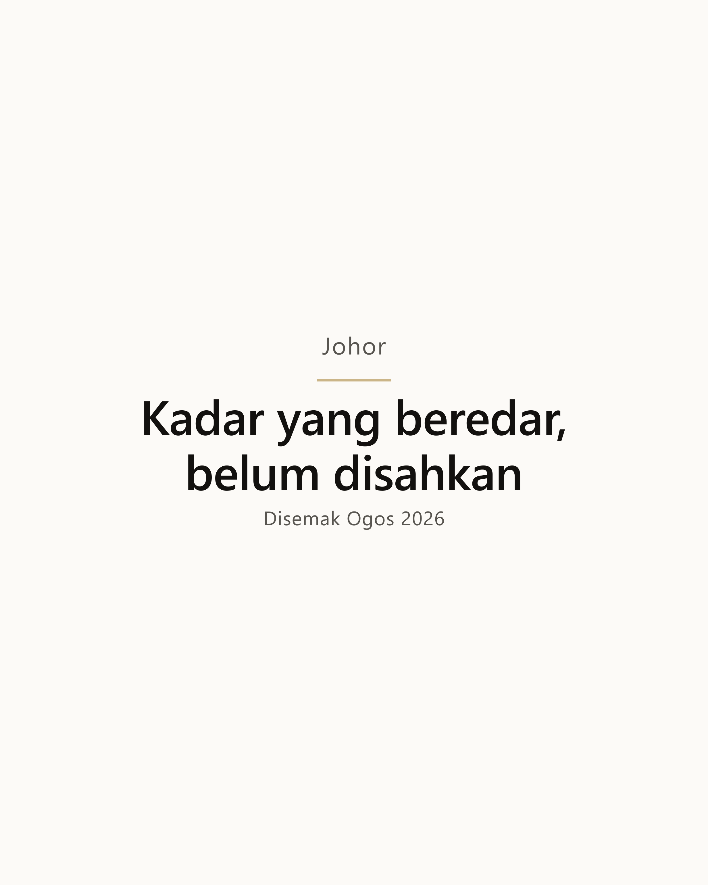
Kad tajuk bagi Johor, bertulis kadar yang beredar belum disahkan, disemak Ogos 2026.
cover: file: ./mas-kahwin-johor-kad-tajuk.png alt: Kad tajuk bagi Johor, bertulis kadar yang beredar belum disahkan, disemak Ogos 2026. credit: Grafik: HelloKahwin licenseClass: G licensorName: HelloKahwin
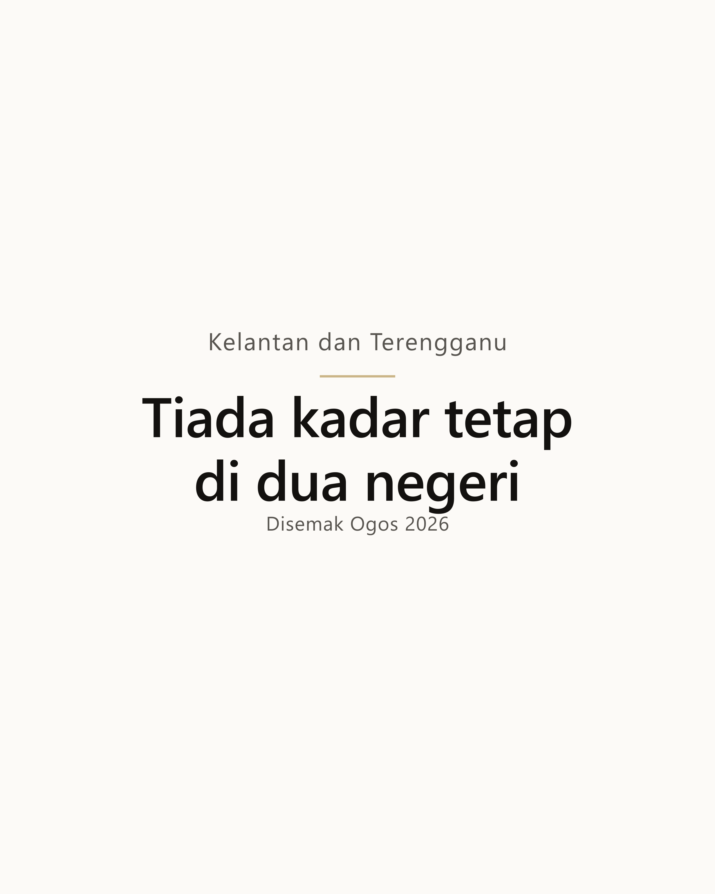
Kad tajuk bagi Kelantan dan Terengganu, bertulis tiada kadar tetap di dua negeri, disemak Ogos 2026.
cover: file: ./mas-kahwin-kelantan-terengganu-kad-tajuk.png alt: Kad tajuk bagi Kelantan dan Terengganu, bertulis tiada kadar tetap di dua negeri, disemak Ogos 2026. credit: Grafik: HelloKahwin licenseClass: G licensorName: HelloKahwin
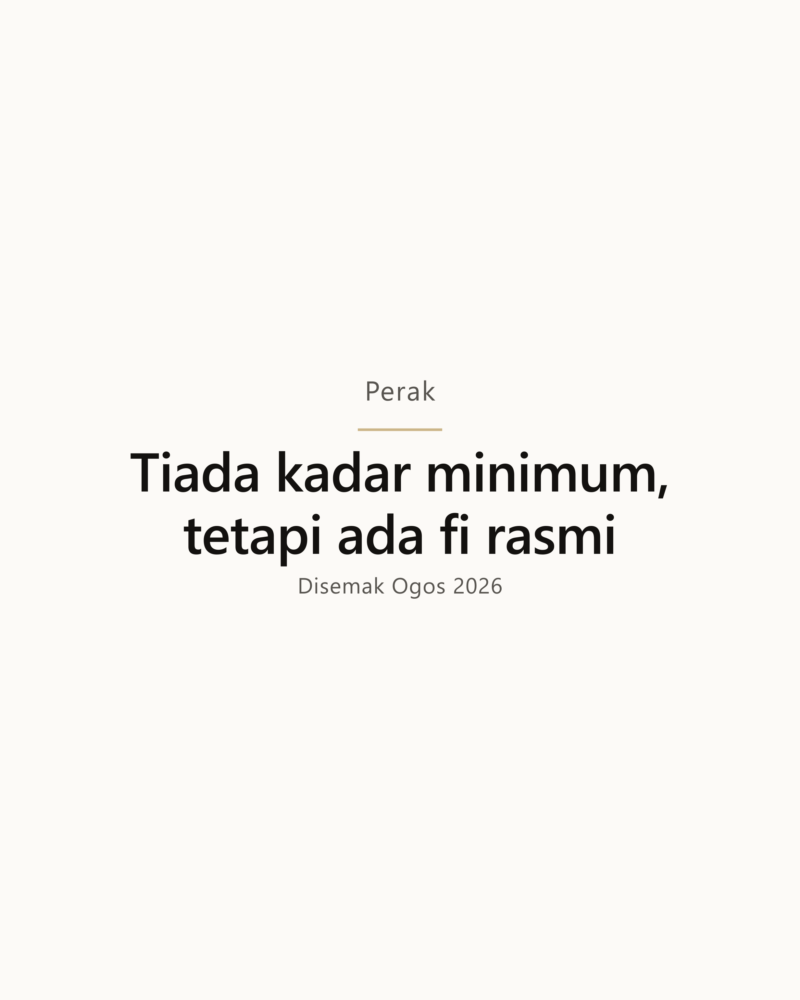
Kad tajuk bagi Perak, bertulis tiada kadar minimum tetapi ada fi rasmi, disemak Ogos 2026.
cover: file: ./mas-kahwin-perak-kad-tajuk.png alt: Kad tajuk bagi Perak, bertulis tiada kadar minimum tetapi ada fi rasmi, disemak Ogos 2026. credit: Grafik: HelloKahwin licenseClass: G licensorName: HelloKahwin
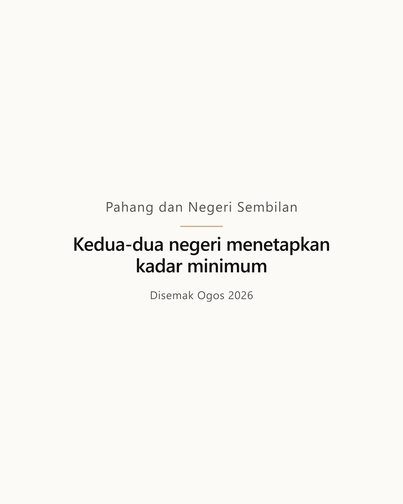
Kad tajuk bagi Pahang dan Negeri Sembilan, bertulis kedua-dua negeri menetapkan kadar minimum, disemak Ogos 2026.
cover: file: ./mas-kahwin-pahang-negeri-sembilan-kad-tajuk.png alt: Kad tajuk bagi Pahang dan Negeri Sembilan, bertulis kedua-dua negeri menetapkan kadar minimum, disemak Ogos 2026. credit: Grafik: HelloKahwin licenseClass: G licensorName: HelloKahwin
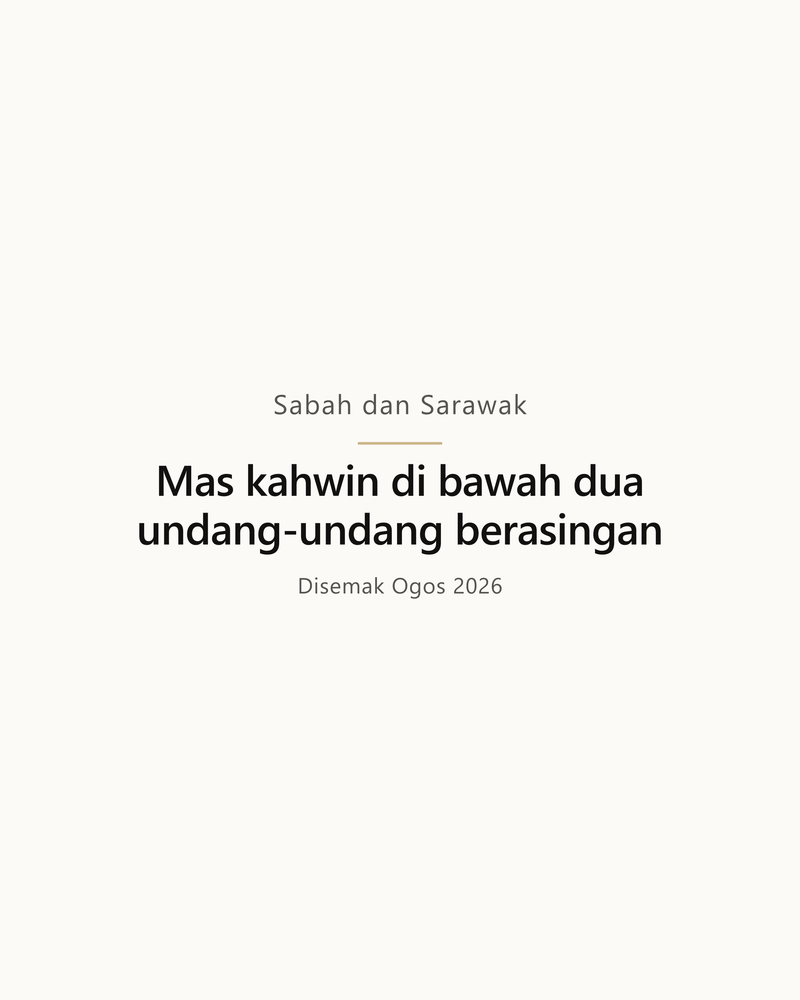
Kad tajuk bagi Sabah dan Sarawak, bertulis mas kahwin di bawah dua undang-undang berasingan, disemak Ogos 2026.
cover: file: ./mas-kahwin-sabah-sarawak-kad-tajuk.png alt: Kad tajuk bagi Sabah dan Sarawak, bertulis mas kahwin di bawah dua undang-undang berasingan, disemak Ogos 2026. credit: Grafik: HelloKahwin licenseClass: G licensorName: HelloKahwin
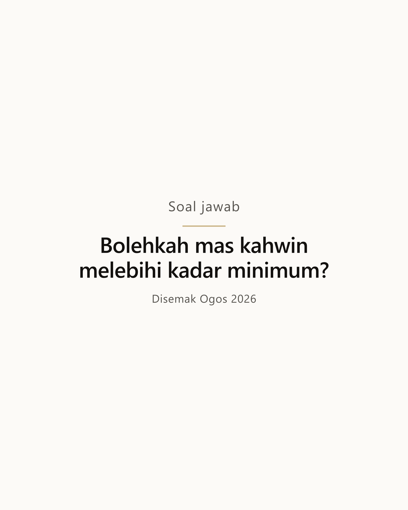
Kad tajuk soal jawab, bertulis bolehkah mas kahwin melebihi kadar minimum, disemak Ogos 2026.
cover: file: ./mas-kahwin-melebihi-kadar-minimum-kad-tajuk.png alt: Kad tajuk soal jawab, bertulis bolehkah mas kahwin melebihi kadar minimum, disemak Ogos 2026. credit: Grafik: HelloKahwin licenseClass: G licensorName: HelloKahwin
Every figure taken from the article it covers. "Tiada kadar minimum ditetapkan" is rendered as a figure, not a blank.
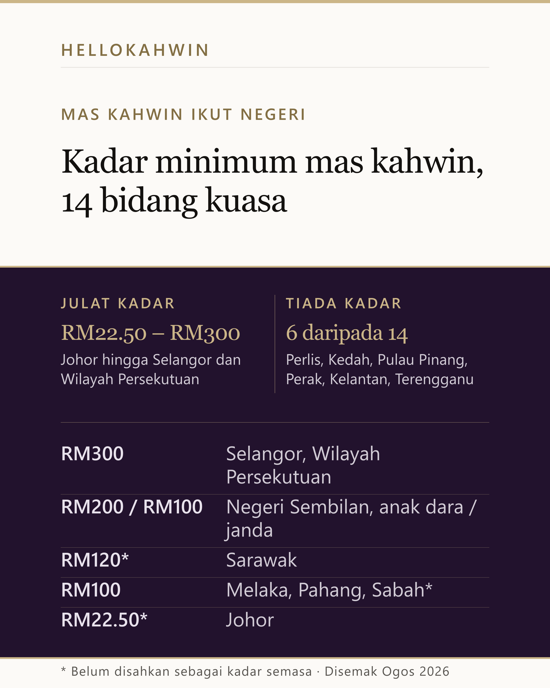
Grafik ringkasan kadar minimum mas kahwin bagi 14 bidang kuasa: julat RM22.50 hingga RM300, RM300 di Selangor dan Wilayah Persekutuan, RM200 anak dara dan RM100 janda di Negeri Sembilan, RM120 Sarawak, RM100 di Melaka, Pahang dan Sabah, RM22.50 Johor, dan tiada kadar minimum ditetapkan di enam bidang kuasa.
cover: file: ./A1-mas-kahwin-ikut-negeri-cover.png alt: Grafik ringkasan kadar minimum mas kahwin bagi 14 bidang kuasa: julat RM22.50 hingga RM300, RM300 di Selangor dan Wilayah Persekutuan, RM200 anak dara dan RM100 janda di Negeri Sembilan, RM120 Sarawak, RM100 di Melaka, Pahang dan Sabah, RM22.50 Johor, dan tiada kadar minimum ditetapkan di enam bidang kuasa. credit: HelloKahwin licenseClass: G licensorName: HelloKahwin
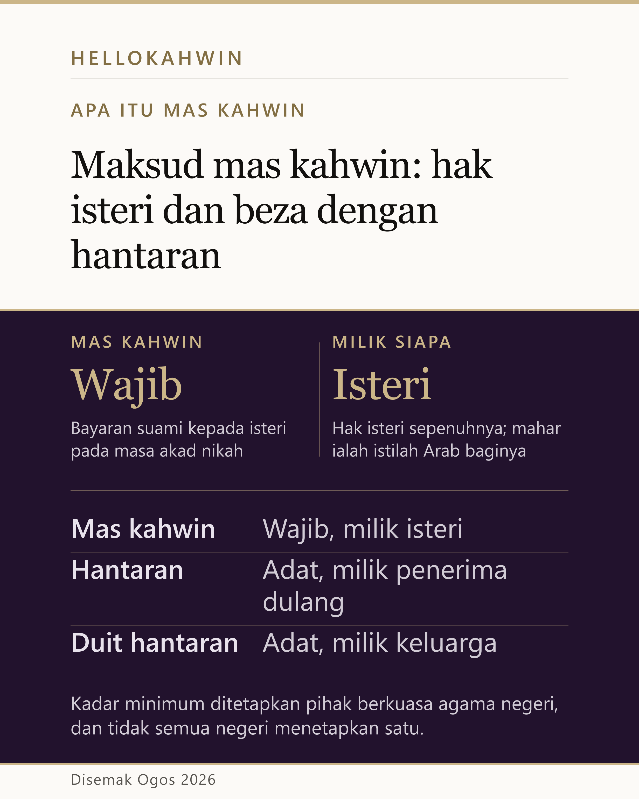
Grafik yang menerangkan maksud mas kahwin sebagai bayaran wajib suami kepada isteri dan hak isteri sepenuhnya, berbanding hantaran dan duit hantaran yang merupakan adat antara dua keluarga.
cover: file: ./A2-apa-itu-mas-kahwin-cover.png alt: Grafik yang menerangkan maksud mas kahwin sebagai bayaran wajib suami kepada isteri dan hak isteri sepenuhnya, berbanding hantaran dan duit hantaran yang merupakan adat antara dua keluarga. credit: HelloKahwin licenseClass: G licensorName: HelloKahwin
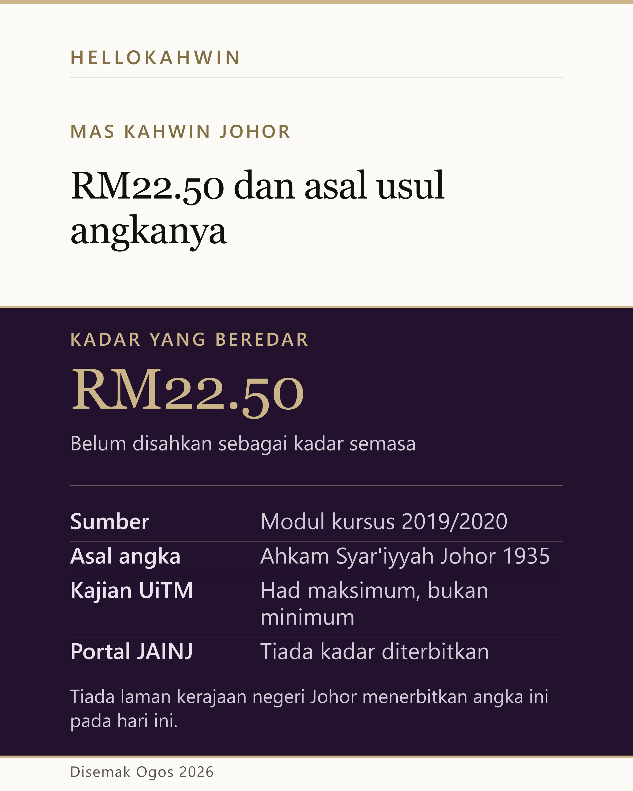
Grafik kadar mas kahwin Johor menunjukkan angka RM22.50 yang beredar dan belum disahkan sebagai kadar semasa, berserta asal usulnya daripada Ahkam Syar'iyyah Johor 1935 dan pembacaan kajian UiTM sebagai had maksimum.
cover: file: ./A3-mas-kahwin-johor-cover.png alt: Grafik kadar mas kahwin Johor menunjukkan angka RM22.50 yang beredar dan belum disahkan sebagai kadar semasa, berserta asal usulnya daripada Ahkam Syar'iyyah Johor 1935 dan pembacaan kajian UiTM sebagai had maksimum. credit: HelloKahwin licenseClass: G licensorName: HelloKahwin
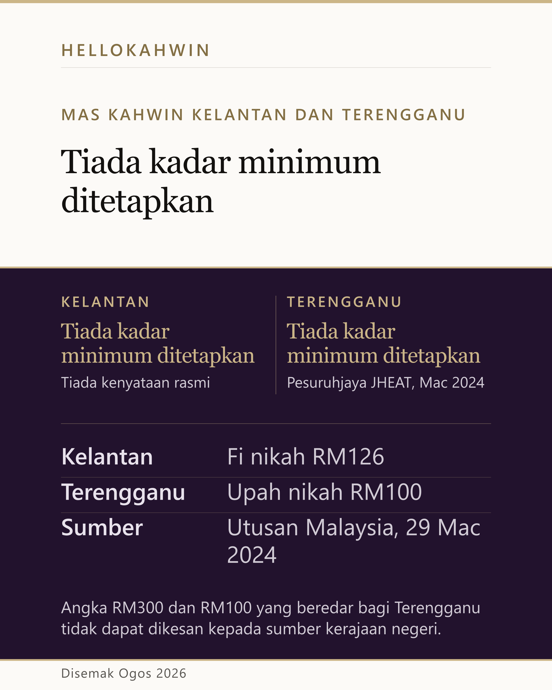
Grafik perbandingan Kelantan dan Terengganu menunjukkan kedua-dua negeri tidak menetapkan kadar minimum mas kahwin, berserta sumber setiap negeri dan fi nikah RM126 di Kelantan serta upah nikah RM100 di Terengganu.
cover: file: ./A4-mas-kahwin-kelantan-terengganu-cover.png alt: Grafik perbandingan Kelantan dan Terengganu menunjukkan kedua-dua negeri tidak menetapkan kadar minimum mas kahwin, berserta sumber setiap negeri dan fi nikah RM126 di Kelantan serta upah nikah RM100 di Terengganu. credit: HelloKahwin licenseClass: G licensorName: HelloKahwin
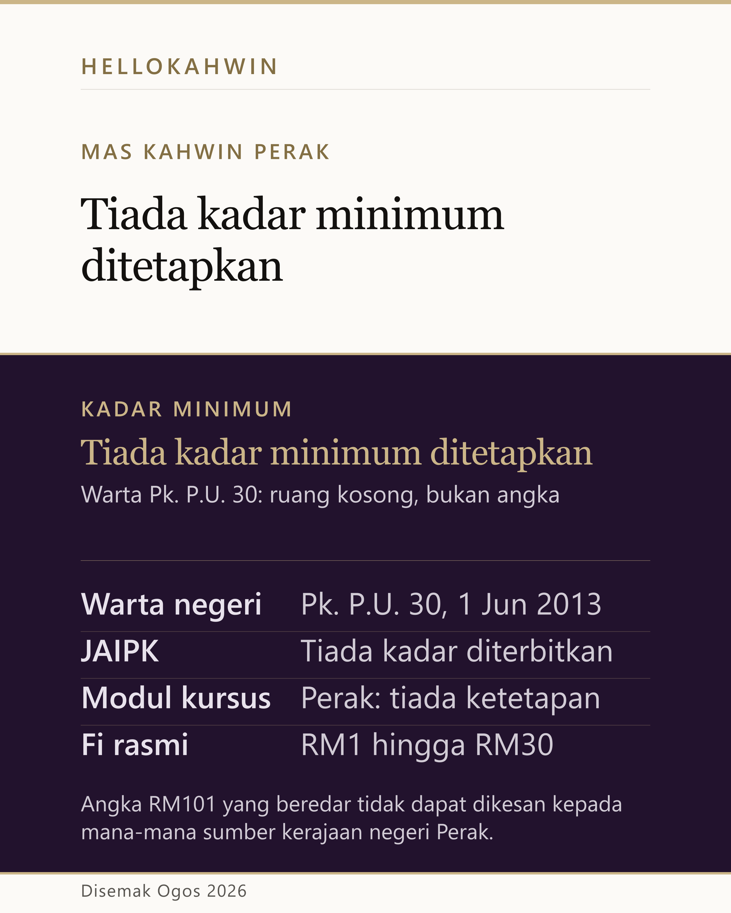
Grafik kadar mas kahwin Perak menyatakan tiada kadar minimum ditetapkan, dengan warta Pk. P.U. 30 bertarikh 1 Jun 2013 hanya membawa ruang kosong pada borang, dan fi rasmi urusan perkahwinan antara RM1 hingga RM30.
cover: file: ./A5-mas-kahwin-perak-cover.png alt: Grafik kadar mas kahwin Perak menyatakan tiada kadar minimum ditetapkan, dengan warta Pk. P.U. 30 bertarikh 1 Jun 2013 hanya membawa ruang kosong pada borang, dan fi rasmi urusan perkahwinan antara RM1 hingga RM30. credit: HelloKahwin licenseClass: G licensorName: HelloKahwin
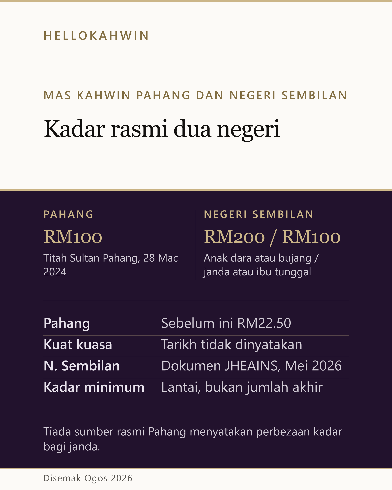
Grafik kadar mas kahwin Pahang RM100 selepas titah Sultan Pahang pada 28 Mac 2024, dan Negeri Sembilan RM200 bagi anak dara atau bujang dan RM100 bagi janda atau ibu tunggal mengikut dokumen JHEAINS.
cover: file: ./A6-mas-kahwin-pahang-negeri-sembilan-cover.png alt: Grafik kadar mas kahwin Pahang RM100 selepas titah Sultan Pahang pada 28 Mac 2024, dan Negeri Sembilan RM200 bagi anak dara atau bujang dan RM100 bagi janda atau ibu tunggal mengikut dokumen JHEAINS. credit: HelloKahwin licenseClass: G licensorName: HelloKahwin
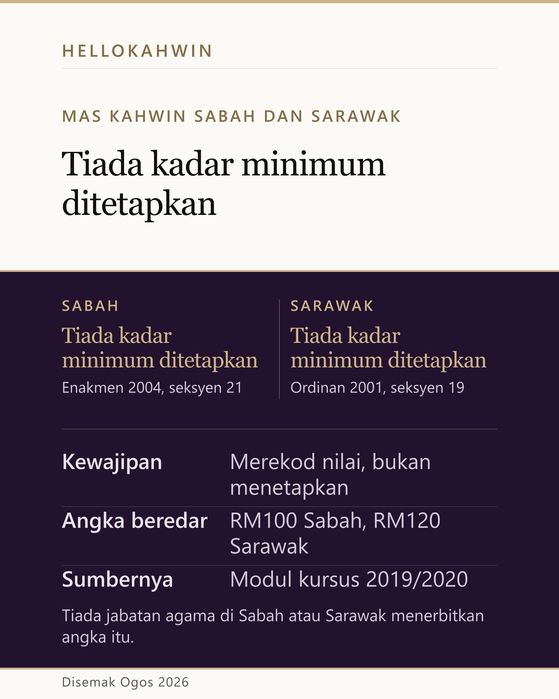
Grafik perbandingan Sabah dan Sarawak menunjukkan kedua-dua negeri tidak menetapkan kadar minimum mas kahwin, dengan enakmen Sabah 2004 seksyen 21 dan ordinan Sarawak 2001 seksyen 19 hanya mewajibkan nilai mas kahwin direkodkan.
cover: file: ./A7-mas-kahwin-sabah-sarawak-cover.png alt: Grafik perbandingan Sabah dan Sarawak menunjukkan kedua-dua negeri tidak menetapkan kadar minimum mas kahwin, dengan enakmen Sabah 2004 seksyen 21 dan ordinan Sarawak 2001 seksyen 19 hanya mewajibkan nilai mas kahwin direkodkan. credit: HelloKahwin licenseClass: G licensorName: HelloKahwin
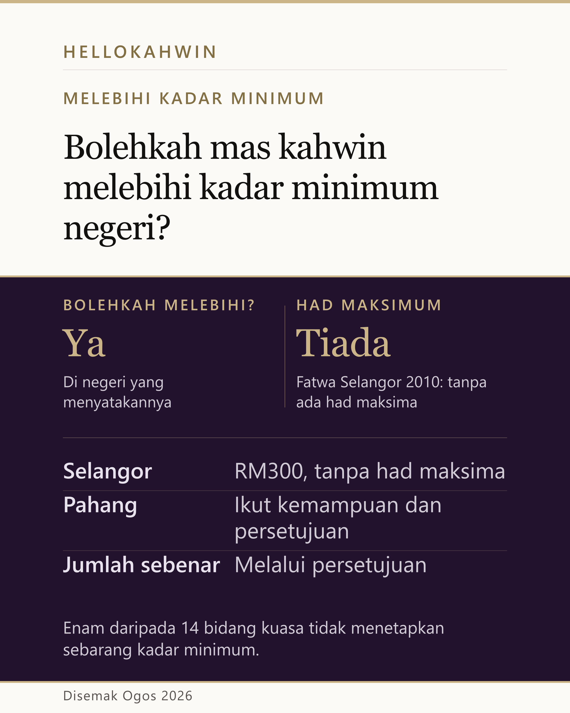
Grafik menjawab sama ada mas kahwin boleh melebihi kadar minimum negeri: boleh di negeri yang menyatakannya, tiada had maksimum dalam fatwa Selangor 2010, dan jumlah sebenar ditentukan melalui persetujuan.
cover: file: ./A8-mas-kahwin-melebihi-kadar-minimum-cover.png alt: Grafik menjawab sama ada mas kahwin boleh melebihi kadar minimum negeri: boleh di negeri yang menyatakannya, tiada had maksimum dalam fatwa Selangor 2010, dan jumlah sebenar ditentukan melalui persetujuan. credit: HelloKahwin licenseClass: G licensorName: HelloKahwin
{kind=link}
{kind=link}
{kind=link}
{kind=link}
{kind=link}
{kind=link}
{kind=link}
{kind=link}
{kind=link}
{kind=link}
{kind=link}
{kind=link}
{kind=link}
{kind=link}
{kind=link}
{kind=link}